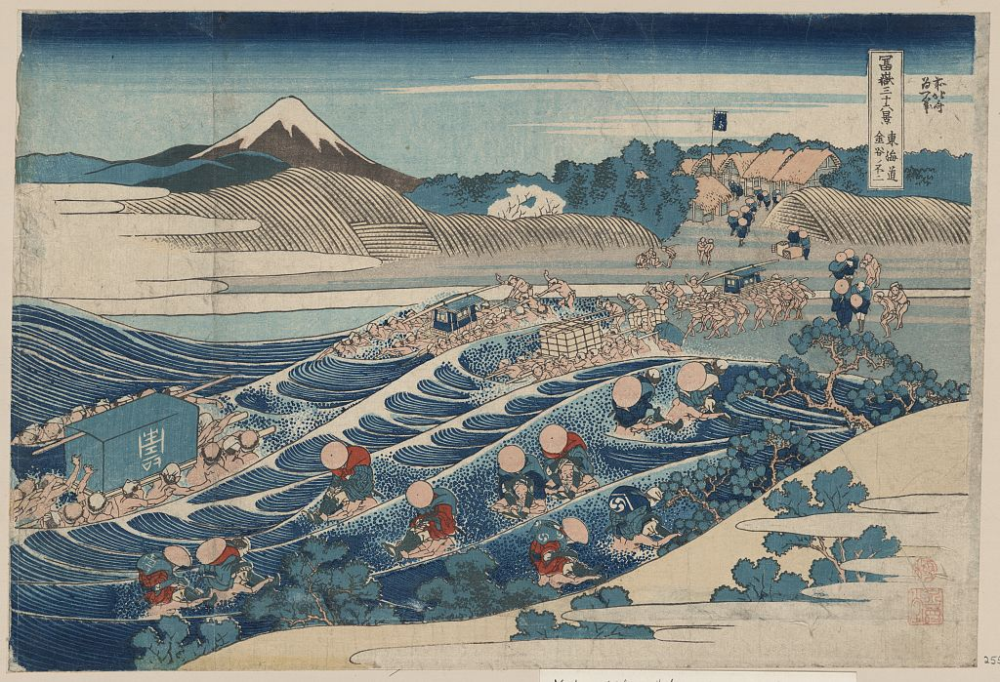
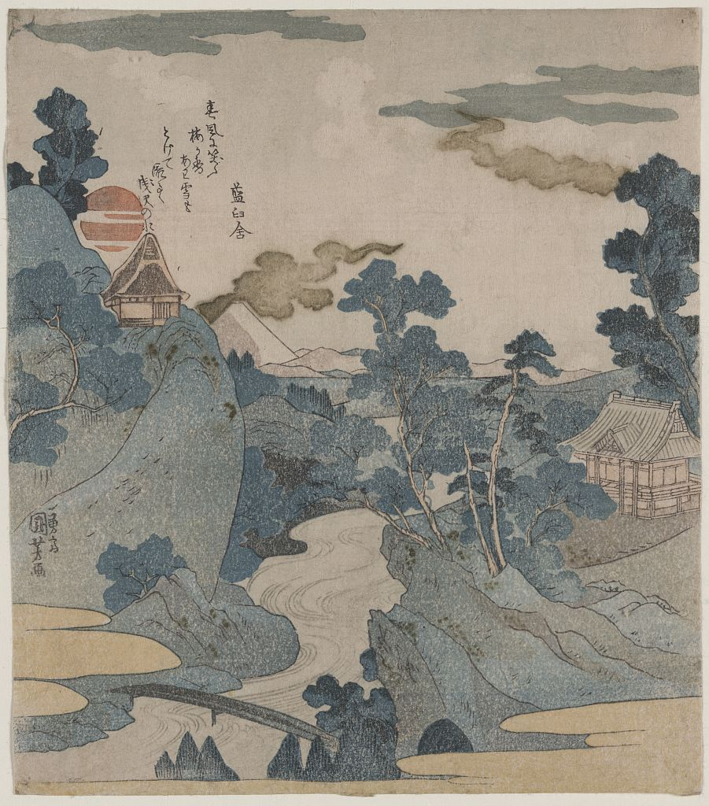
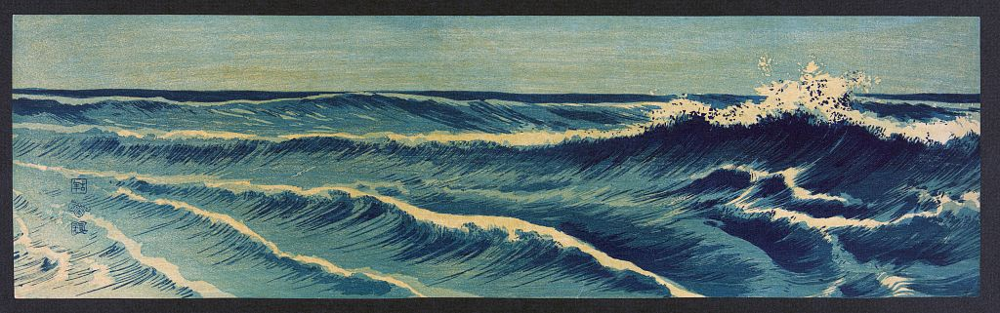
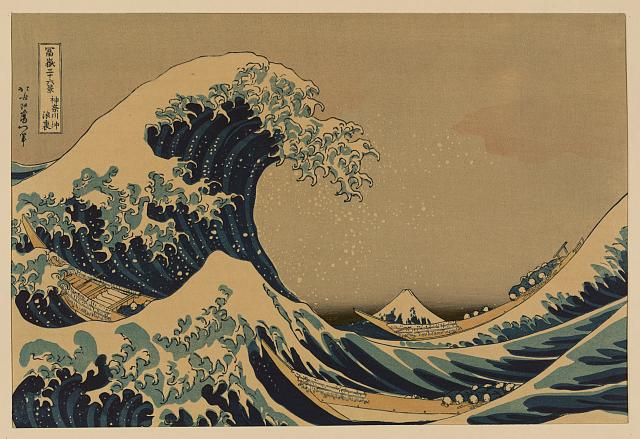
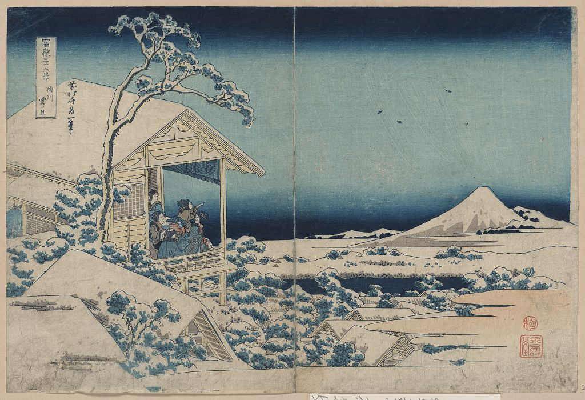
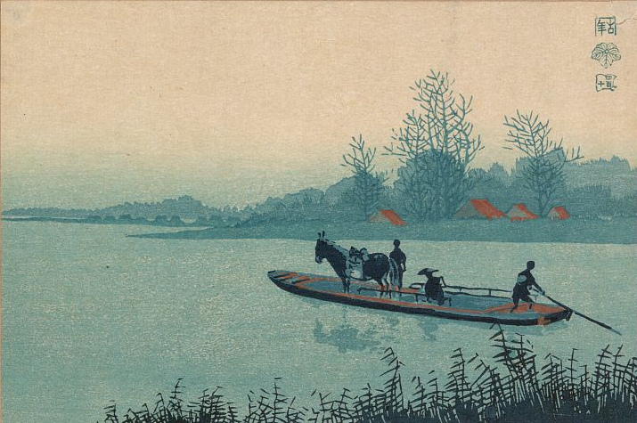
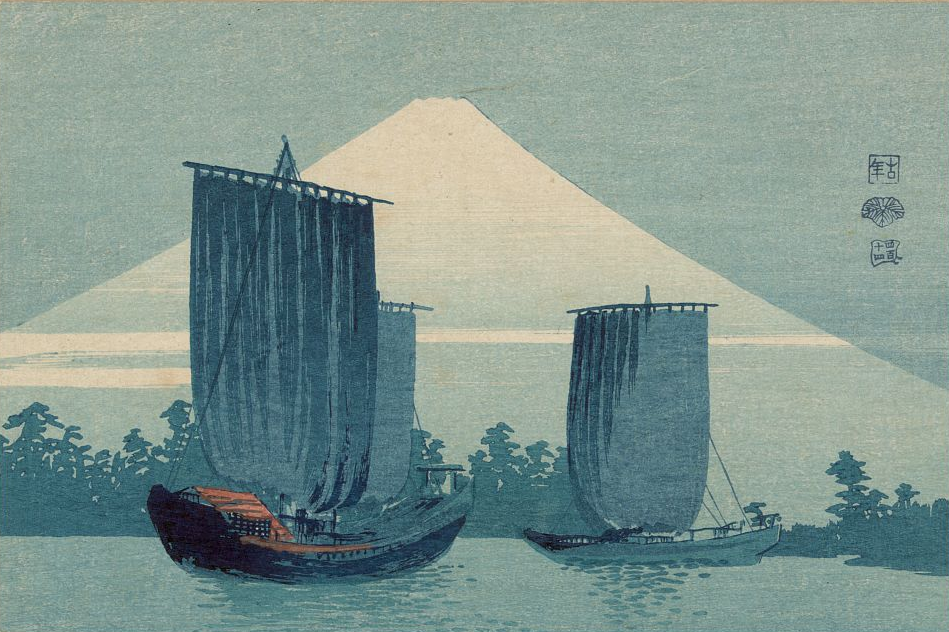
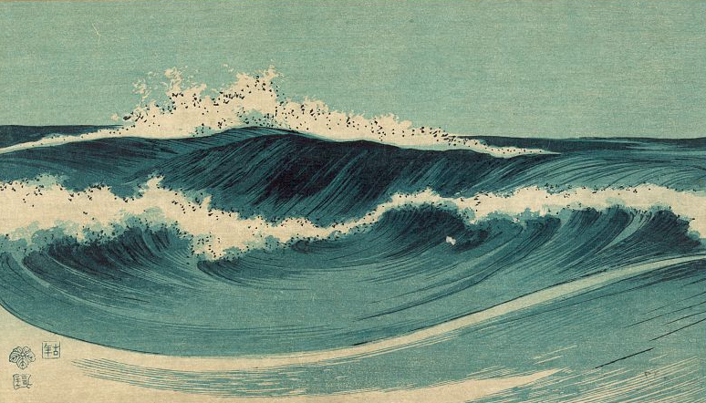

Drawing
The artist prepares the original design.
Japanese Fine Arts Before 1915
Whisper of Woodblock
Step into a quiet exhibition where every print tells a story, every carved line holds history, and every scroll reveals the beauty of Japanese art before 1915.
Scroll to explore
浮世の響き
02
Introduction
In the stillness of ink and paper, ukiyo-e tells stories that stretch beyond time. These Japanese woodblock prints captured the beauty, culture, and spirit of everyday life.
From quiet landscapes to theatrical moments, each artwork preserves a fleeting part of history through color, line, texture, and careful craftsmanship.

Featured Artwork
Waves
A quiet study of movement, rhythm, and the changing surface of the sea.

The Craft
The artist prepares the original design.
The image is carefully carved into wooden blocks.
Each block receives its own pigment.
The colors are layered onto paper one block at a time.
Featured Artists

1760–1849
Exhibition
展示作品リスト




Timeline
Early actor prints and theatrical subjects.
Ukiyo-e expands through portraiture and popular culture.
Landscape prints flourish through Hokusai and Hiroshige.
Traditional techniques continue into a changing era.
The exhibition reaches the close of its selected period.